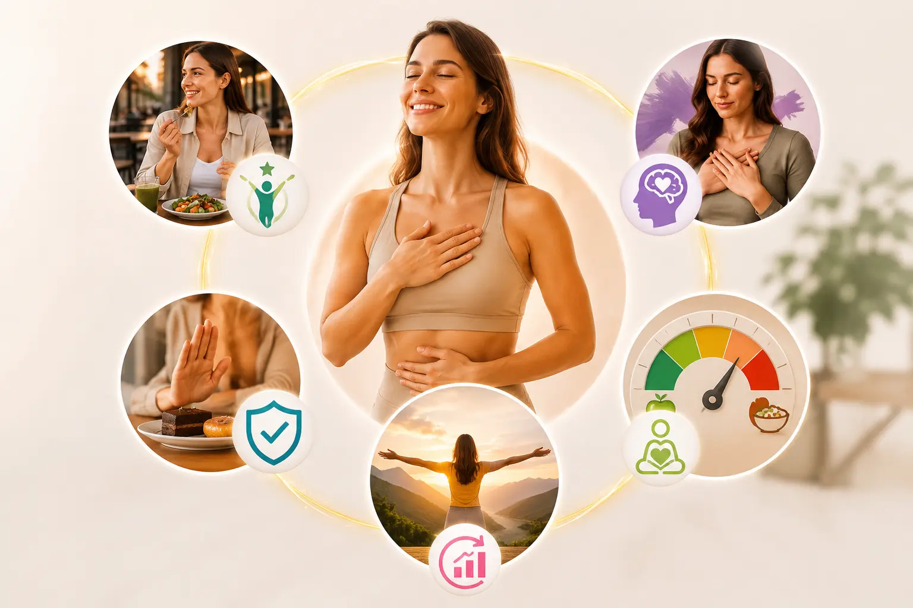

Nutricionista em Porto Alegre: Emagrecimento através de Terapias Comportamentais Contextuais
Emagreça de verdade — sem dieta e sem efeito sanfona. Atendo presencialmente no bairro Menino Deus, em Porto Alegre, e online para todo o Brasil. Sou Letícia Christianetti, criadora do Método 4F. Através das Terapias Comportamentais Contextuais (ACT, DBT e Mindful Eating), trato a raiz da compulsão alimentar e do comer emocional para devolver a sua autonomia alimentar.
Com 20 anos de atuação clínica, Letícia transcende as dietas restritivas unindo o rigor acadêmico da nutrição ao acolhimento das Terapias da Terceira Onda da Psicologia.
Formação Acadêmica Graduada em Nutrição pela Universidade do Vale do Rio dos Sinos (2006). Pós-graduada em Comportamento Alimentar pelo Instituto de Pesquisas e Gestão em Saúde (iPGS).
Coordenação e Docência Coordenadora da Pós-Graduação em Equilíbrio Alimentar com ênfase nas Terapias Comportamentais Contextuais na FACEFI. Docente junto à FACEFI e iPGS em Porto Alegre/RS.
Publicação Científica Coautora no livro "Manejo do Comportamento Alimentar" (Organizadora: Patrícia Kluwe Viégas Damé. 1ª ed. Porto Alegre: Instituto de Pesquisas e Gestão em Saúde - iPGS, 2018).
O que é a Matrix do Método 4F?
Um protocolo estruturado nas Terapias Contextuais (ACT e DBT) para
promover a flexibilidade psicológica e a mudança real do comportamento alimentar.
O Método 4F é um protocolo de Nutrição Comportamental criado a
partir de 20 anos de prática multidisciplinar. Seu objetivo é desenvolver habilidades para o "comer
consciente" através de 4 pilares inegociáveis: Foco, Função, Frequência e Fartura.
1. Foco (Mindfulness)
Treinamos sua atenção plena no momento presente (Mindful Eating). O objetivo é
trazer consciência corporal, ajudando você a sair do "piloto automático" e notar seus
pensamentos, sensação física de fome e saciedade sem julgamentos.
2. Função (Valores)
Notamos a função do seu comportamento através da Matrix de Análise Funcional (ACT).
Avaliamos se o ato de comer aproxima você de seus valores ou atua como fuga emocional
disfuncional (o famoso comer emocional).
3. Frequência (Autonomia)
Desconstruímos a "dicotomia alimentar" (alimentos permitidos vs. proibidos). Analisamos:
A frequência com que escolho este alimento é congruente com meus objetivos?
Ensinamos interações metabólicas e Índice Glicêmico.
4. Fartura (Comer Intuitivo)
Analisamos: A quantidade que eu escolho comer está congruente com meus valores?
Entregamos permissão incondicional para honrar a saciedade do seu estômago e nutri-lo,
curando o instinto primitivo de privação extrema.
Entenda a diferença estrutural entre tentar controlar o peso através da
privação e focar no comportamento humano.
A Mentalidade de Dieta (Tradicional)
Nutrição Contextual (Comer Intuitivo)
Regras externas e rígidas (Dicotomia Alimentar)
Foco em sinais internos (Escala de Fome e Saciedade)
Baseada na privação calórica extrema
Baseada na satisfação, nutrição e Índice Glicêmico
Gera medo, julgamento e vergonha (Culpa)
Promove confiança, autoaceitação e compaixão
Gatilho contínuo para compulsão crônica
Treino da Tolerância ao Mal-Estar Emocional
A Ciência Contra a Compulsão: As Habilidades TIP
No Método 4F, o tratamento da compulsão não depende de "força de vontade".
Ensinamos as Habilidades TIP da Terapia Comportamental Dialética (DBT) para
atuar na fisiologia do cérebro, reduzindo os picos dopaminérgicos de estresse sem recorrer ao
comportamento de comer descontrolado.
Quando a crise do comer emocional
extremo surgir, o objetivo principal é a Tolerância ao Mal-Estar utilizando
quatro habilidades práticas:
1. Temperatura (Gelo): Mergulhar o rosto em água bem fria ou passar
gelo (nuca, olhos, bochechas) por 30 segundos para acionar o reflexo de mergulho e
baixar imediatamente o ritmo cardíaco.
2. Exercício Intenso: Praticar apenas 5 minutos de gasto físico abrupto
(corrida sem sair do lugar, pular corda rapidamente) para processar o cortisol acumulado
pela emoção desregulada.
3. Respiração Ritmada: Inspirar ativamente por 4 segundos pela barriga
e exalar lentamente por 8 segundos. A expiração mais longa atua no sistema
parassimpático devolvendo a calma.
4. Relaxamento Muscular Pareado: Tencionar intencionalmente o corpo
inspirando e, ao expirar soltando o ar pela boca, repetir mentalmente a palavra "relaxe"
até a passagem do impulso.

Comida colorida e intuitiva como base da nutrição contextual.
Especialidades e Áreas de Atuação Clínicas
Além do comportamento alimentar, o tratamento considera toda a sua fisiologia para um resultado duradouro e integrado.
Nutrição Comportamental e Consulta Clínica
Abordagem completa para o emagrecimento sustentável e o tratamento definitivo da compulsão alimentar.
Gastroenterologia e Modulação Intestinal
Tratamento focado no eixo intestino-cérebro, disbiose e recuperação da saúde gastrointestinal.
Fitoterapia Aplicada
Prescrição de extratos vegetais e chás para auxiliar no controle do estresse, sono e regulação metabólica.
Atendimento Presencial e Online
Consultório físico de fácil acesso no bairro Menino Deus, ou videoconsultas para todo o Brasil.
Quanto Custa uma Consulta com Nutricionista em Porto Alegre?
Entendemos que o investimento é uma dúvida real antes de agendar.
O valor da consulta varia conforme o tipo de acompanhamento (avaliação inicial, retorno, presencial
ou online). Trabalhamos com consultas particulares. Fale conosco pelo WhatsApp para receber os valores atualizados e a disponibilidade
de agenda.
Assista ao vídeo abaixo e descubra como a Nutrição Contextual transforma
a sua relação com a comida diariamente.
Quem já viveu essa transformação
Resultados reais de pacientes do consultório em Porto Alegre e dos
atendimentos online.
⭐⭐⭐⭐⭐
"A Letícia é uma excelente profissional, comprometida e dedicada. Gosto muito da forma como
ela atende e dá espaço para o nosso sentir como cliente. Me sinto acolhida, ouvida. Super
recomendo."
LL
Larissa Lara
Avaliação no Google
⭐⭐⭐⭐⭐
"A Leticia é uma excelente profissional! Trabalha na área de nutrição comportamental
abrangendo o comportamento em relação a comida, levando em consideração as emoções! Foi o
melhor acompanhamento."
CS
Caroline S. Rodrigues
Avaliação no Google
⭐⭐⭐⭐⭐
"Profissional extremamente atenciosa e competente. O seu jeito de lidar com as pessoas é
muito especial e um diferencial no tratamento. Disponível, amorosa, atenta às necessidades.
Parabéns!!"
Consulte-se no coração de Porto Alegre ou no conforto da sua casa, em
qualquer lugar do Brasil.
Consultório em Porto Alegre
Um espaço integrado de saúde planejado para garantir acolhimento, discrição e segurança
terapêutica durante o seu tratamento pelo Método 4F.
Nutrição Contextual - Letícia Christianetti
Clínica RAM Saúde Integral
Av. Getúlio Vargas, 1157 - Sala 516
Bairro Menino Deus, Porto Alegre - RS
CEP: 90150-002
Edifício moderno, portaria segura. Ideal para pacientes de toda a Região Metropolitana, Viamão, Canoas e
São Leopoldo.
Tire suas dúvidas sobre o tratamento focado no comportamento alimentar
em Porto Alegre e Online.
Quanto custa uma consulta com nutricionista em Porto Alegre?
+
O valor varia conforme o tipo de atendimento (avaliação inicial, retorno, presencial ou
online). Trabalhamos com consulta particular. Entre em contato pelo WhatsApp para
receber os valores atualizados e verificar disponibilidade de agenda.
Como funciona a primeira consulta com uma nutricionista em Porto Alegre?
+
A primeira consulta presencial (no bairro Menino Deus) ou online é focada na Entrevista
Motivacional. Mapeamos a sua relação com o corpo, histórico de dietas e os gatilhos das
suas escolhas atuais. O objetivo inicial é entender a verdadeira função da comida para
você antes de propor qualquer intervenção de cardápio.
Qual a diferença entre Nutrição Convencional, Nutrição Comportamental e Nutrição Contextual?
+
A nutrição convencional prescreve restrição rígida. A Nutrição
Comportamental une psicologia à nutrição para entender o porquê do comer. A
Nutrição Contextual (Método 4F) vai além: utiliza a Matrix da
Análise Funcional, a ACT e a DBT para gerar a flexibilidade psicológica
necessária para mudanças estruturais do comportamento de acordo com os seus valores.
O método funciona para quem tem Compulsão Alimentar grave?
+
Sim. O Método 4F atua especificamente nos transtornos impulsivos sem exigir "força de
vontade". Ensinamos o uso tático das Habilidades TIP (da Terapia Comportamental
Dialética) para que você consiga tolerar o mal-estar emocional extremo e estresse sem
recorrer imediatamente ao comer exagerado para regular o seu pico de dopamina.
Nutricionista atende pacientes que utilizam Mounjaro, Ozempic ou Venvanse?
+
Sim. Sabemos que medicações como Mounjaro ou Ozempic atuam na saciedade fisiológica, mas
não ensinam novos comportamentos. O acompanhamento com o Método 4F
desenvolve a flexibilidade psicológica necessária durante a medicação para evitar o
reganho de peso (efeito sanfona) quando as injeções não forem mais uma opção contínua.
Como controlar a compulsão alimentar à noite?
+
A compulsão noturna é geralmente o resultado da "dicotomia alimentar" durante o dia —
privação contínua de caloria ou acúmulo de cansaço e irritação. Nos pilares
Fartura e Frequência, organizamos as suas refeições diurnas baseando-se
no Índice Glicêmico. À noite, aplicamos Habilidades TIP para que o cansaço emocional não
force um pico dopaminérgico associado à comida.
Vou precisar cortar carboidratos ou doces?
+
Não. A Nutrição Contextual rejeita frontalmente a dicotomia alimentar ("alimentos
permitidos vs. proibidos"). Nós ensinamos você a recuperar a autonomia, usando o
conhecimento sobre as interações metabólicas (Índice Glicêmico) para equalizar a
frequência das suas escolhas e nutrir o seu corpo, sem banir o prazer ou punir suas
emoções.
O que é a fome emocional e como o Método 4F ajuda?
+
O "comer
emocional disfuncional" ocorre quando usamos a comida como fuga de emoções
difíceis. No pilar Função, utilizamos a Análise Funcional para identificar se a escolha
afasta ou aproxima você dos seus valores, ensinando técnicas para tolerar frustrações
sem o comer exagerado.
É possível emagrecer com a Nutrição Comportamental sem fazer dieta restritiva?
+
Sim. O emagrecimento sustentável é a consequência do desenvolvimento de habilidades para
o 'comer consciente'. Em vez da restrição, ensinamos a equilibrar o Índice Glicêmico e a
escutar os sinais internos do estômago, rompendo a mentalidade de dieta que gera o
efeito sanfona.
Como diferenciar a fome física da vontade de comer?
+
A fome física sinaliza o uso de reservas do corpo (ronco no estômago). A fome emocional é
guiada por pensamentos e gatilhos. Trabalhamos o Mindful Eating e a Escala de Fome
(1 a 10) para recuperar a consciência corporal de forma autônoma.
Quanto tempo leva para perceber resultados?
+
Ao atuar na função do comportamento, a redução da culpa ao comer e o resgate da atenção
plena (sair do piloto automático) podem ser notados em um período inicial. A
estabilização de peso é um processo que tende a acompanhar o desenvolvimento da
flexibilidade psicológica e a consolidação de novos hábitos.
O acompanhamento nutricional online dá o mesmo resultado que o presencial?
+
O acompanhamento online pode oferecer a mesma base técnica do presencial, especialmente
porque o método se apoia em habilidades comportamentais e análise funcional, mas a
indicação depende do contexto de cada paciente.
Como agendar uma consulta em Porto Alegre ou online?
+
O agendamento é feito diretamente pelo nosso WhatsApp (51)
99316-0254. Minha equipe compartilhará a disponibilidade de agenda tanto para
atendimento presencial (Menino Deus, Porto Alegre), quanto para videoconsultas em todo o
Brasil.
Atende por algum convênio como a Unimed Porto Alegre?
+
Focamos na excelência clínica da terceira onda da psicologia e nutrição por meio de
consultas particulares.
O fim do efeito sanfona começa com a sua decisão de hoje.
Agende sua avaliação inicial. Vamos analisar a fundo a raiz do seu comportamento alimentar e traçar o
plano ideal para a sua autonomia corporal.